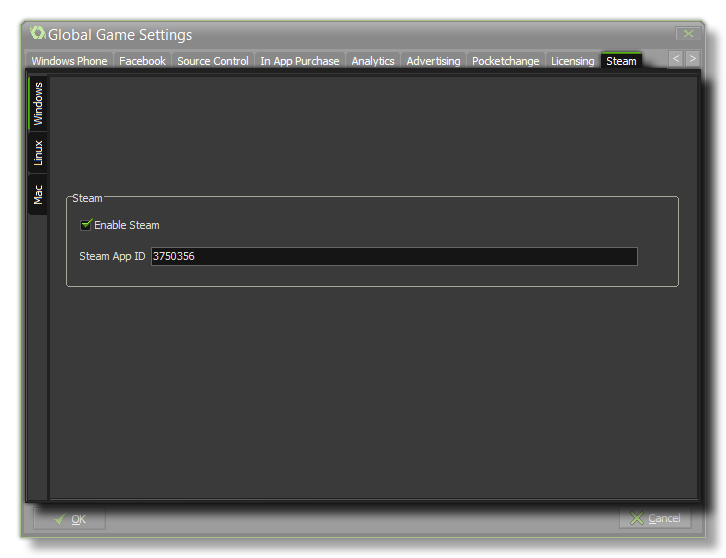

 If your game has been
accepted onto the Steam platform for sale, you should have
installed and checked the Steamworks SDK through the
Steam
Preferences tab. Along with the SDK, you should have been given
a Steam App ID which should then be inserted here, and the
Enable Steam checkbox ticked for each of the possible Steam
target platforms (Windows, Linux or MacOSX). This will now enable
the use of the Steam API
Functions in your game.
NOTE: This functionality is limited to the Professional
Version of GameMaker: Studio.